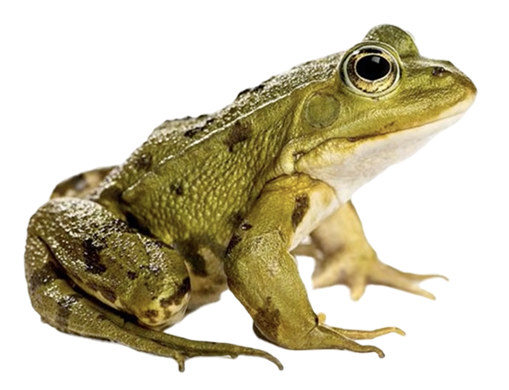
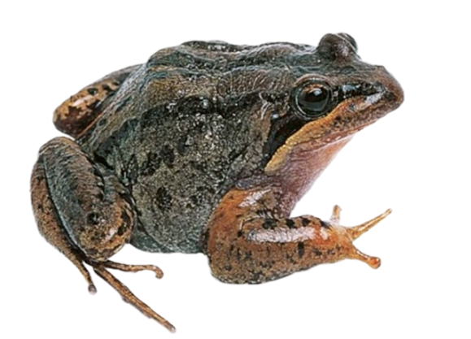
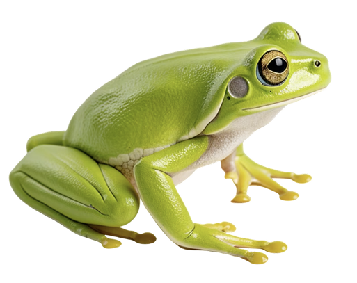
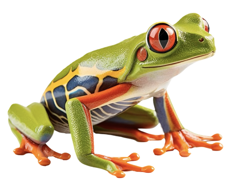
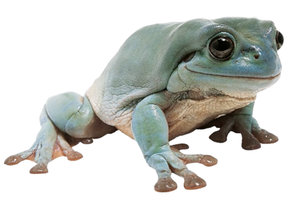
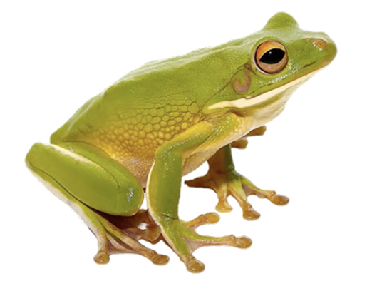
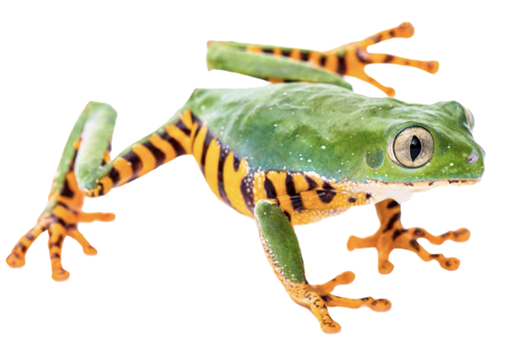

Een digital garden over mijn favotiete dier, de kikker 🐸
Ik heb deze garden gemaakt, omdat veel mensen bang zijn voor kikkers of padden. Dat is absuluut niet nodig en ik wil laten zien hoe veel verschillende prachtige kikkers en padden er bestaan.
Ik heb deze garden gemaakt, omdat veel mensen bang zijn voor kikkers of padden. Dat is absuluut niet nodig en ik wil laten zien hoe veel verschillende prachtige kikkers en padden er bestaan.
Deze kikkers zijn de meest voorkomende kikkers uit deze lijst.


Deze kikkers zijn boomkikkers.




